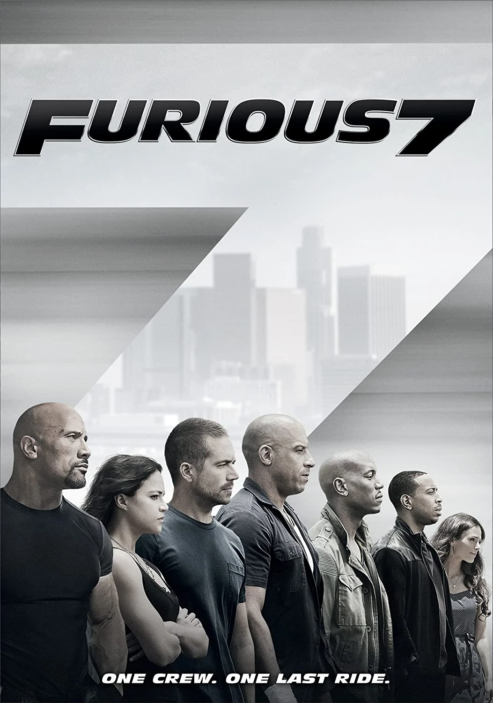

Fast and the furious 7
In Fast & Furious 7, the stakes are higher than ever as Dominic Toretto (played by Vin Diesel) and his crew face a formidable adversary: Deckard Shaw (played by Jason Statham). Here’s a quick summary: Background: After defeating international terrorist Owen Shaw, Dominic and his crew believed they had left the criminal mercenary life behind. However, Owen’s brother, Deckard Shaw, seeks revenge for his comatose sibling and begins targeting the crew one by one12. The Mission: Shaw is out for blood, and the crew must stop him. A Somalian terrorist named Jakarde and a shadowy government official known as “Mr. Nobody” are also after a powerful computer terrorism program called “God’s Eye.” This program can turn any technological device into a weapon. Torretto and his team find themselves caught in a power struggle between terrorists and the United States government1. Action and Thrills: The film kicks off in London, where Deckard Shaw stands by his brother Owen’s bedside. Shaw promises to settle the score for his brother’s injuries. Meanwhile, Dom and Letty participate in a high-stakes race in California. As the crew races against time, they must confront Shaw and retrieve the God’s Eye program
- Author :Rob Cohen
- Film evaluation :10/7
- Publication date :2015
- Movie stars :Vin Diesel(Dominic Toretto),Michelle Rodriguez(Letty),JordanaBrewster(MiaToretto),Rick Yuen(Johnny Tran),ChadLindberg(Jesse),Johnny Strong(Leon)
You can watch the movie her